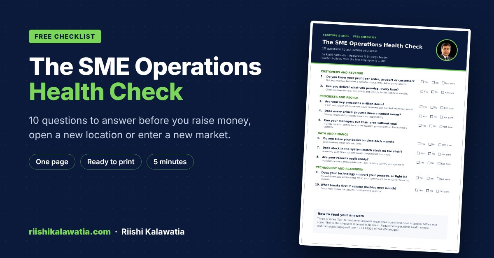

Download the checklist (PDF)Read the full article
What the checklist covers
- Customers and revenue: profit per order, product or customer, and delivery on every promise.
- Processes and people: written processes, named owners, and managers who can run their area without the founder.
- Data and finance: books closed on time, stock that matches the shelf, and audit-ready records.
- Technology and readiness: systems that support the process, and what breaks first if volume doubles.
How to use it
Answer each question Yes, No or Not sure. Three or more "No" or "Not sure" answers mean your operations need attention before you scale. That is the cheapest moment to fix them.
For a structured operations health check of your business, start a conversation or message on WhatsApp.